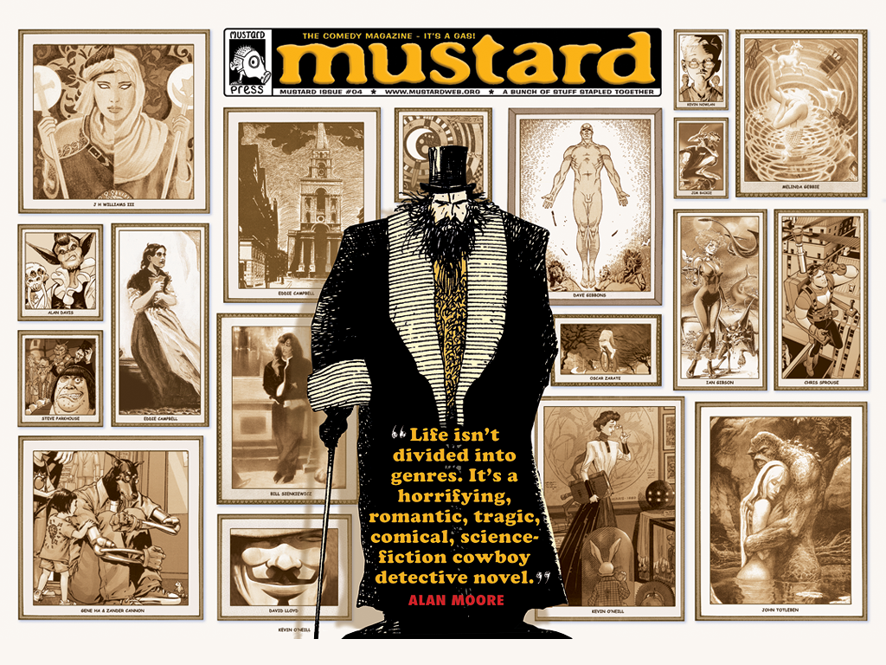
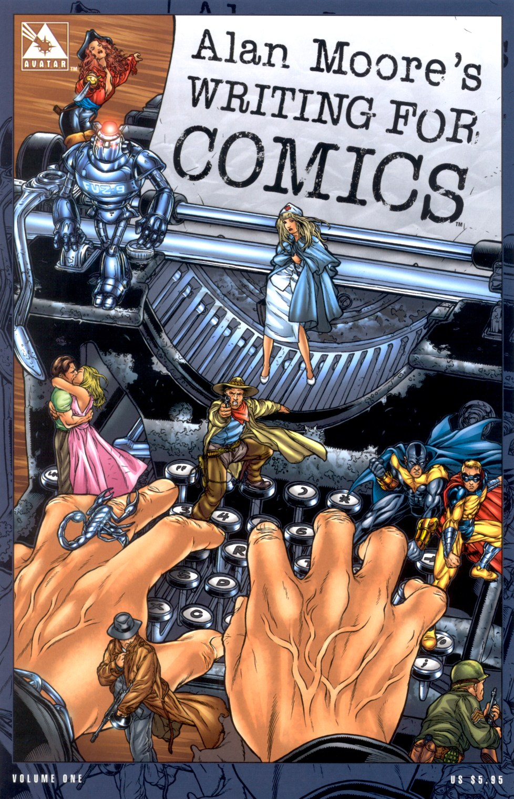

Alan Moore’s Writing for Comics

Fuente: Chris Boland
Si hiciéramos un repaso por la historia de los cómics y olvidáramos incluir a Alan Moore, estaríamos dejando de lado varios de los mejores cómics que se hayan escrito y publicado.
Algunos de sus títulos más reconocidos han causado tal conmoción que trastocaron el género emblemático de la industria, e incluso han permanecido como íconos culturales y hoy se les observa en los rostros de muchos manifestantes.
Fuente: Matt Jones
Alan Moore es, sin duda, un autor de una tremenda fuerza creativa, capaz de reinventar géneros, de encontrar nuevas formas de narrar; creador de universos y realidades con historias muy inteligentes, cargadas de planteamientos morales y filosóficos; y explorador de ideas y símbolos.
Magia, fantasía, terror, historia, misterio, romance, literatura, psicodelia, sexo, anarquía y filosofía son sólo algunos de los temas tras la densa ficción de este autor, que deja un legado de obras que por sí mismas son un manual para escribir ficción.

Fuente: Mustard Magazine
Es precisamente esta idea la que subyace en Alan Moore’s Writing for Comics, libro que recoge un par de ensayos, uno de ellos de 1985, en el que Moore comparte sus pensamientos sobre el arte de escribir cómics, con más intención de hacernos pensar en el proceso creativo de escritura y creación que en ofrecernos una lista de consejos o detalles específicos.

Moore inicia con un tono vehemente al evidenciar uno de los vicios de la industria:
Ciertamente, en términos del estándar general para escribir cómics en la actualidad, tiendo a ver las mismas estructuras argumentales mecánicas y el mismo enfoque funcional para la caracterización siendo usados una y otra vez, hasta el punto en el que las personas encuentran difícil imaginar que pueda haber una manera diferente de hacer las cosas.
Y señala por qué la industria debe adoptar cambios esenciales, enfatizando el proceso de escritura frente a otros avances a los que considera ornamentales, como las técnicas de ilustración con ayuda de computadoras:
La razón por la que la escritura de cómics es, quizá, un asunto más delicado que el dibujo de cómics, es porque la escritura llega al principio del proceso. Si el pensamiento tras la escritura es inadecuado, el guión es inadecuado. Por tanto, incluso en las manos de los mejores artistas del mundo, el cómic final carecerá de algo que ninguna cantidad de colores espectaculares o impresión puede esperar a compensar.
Al iniciar sus observaciones sobre los aspectos de la escritura, Moore menciona a la idea como el aspecto fundamental de cualquier proceso creativo.
La idea es sobre lo que trata la historia; no la trama de la historia o el despliegue de eventos dentro de la historia, sino la esencia de la historia.
La mayoría de los cómics tienen tramas en las que el único tema es la lucha entre dos o más antagonistas. La resolución del conflicto, que usualmente implica algún elemento deus ex machina como el uso de un superpoder, es la resolución de la trama también. Más allá de la banalidad más vaga y sin sentido como “El bien siempre triunfará sobre el mal”, no hay una verdadera idea central en la mayoría de los cómics, mas que la propia idea del conflicto.
Remarca también el aspecto de la comunicación con el lector al establecer que no existe un lector promedio, por lo que las restricciones en los diálogos (o dibujos) para tratar de no herir susceptibilidades son barreras artificiales, al igual que la elección de estructura, el ritmo y el estilo de narración.
Cuando consideres a la persona que eventualmente leerá tu historia, el común denominador que debes perseguir no es el mínimo común denominador de la aceptación pública, más bien el denominador de la humanidad básica.
Hay una gran probabilidad, no importa qué tan único o especial seas o crees que seas, que haya ciertos mecanismos humanos básicos que compartas con los miembros conservadores del congreso, los mineros de Yorkshire, las lesbianas radicales y los oficiales de policía.
Básicamente, no hay límites a los diferentes efectos narrativos y enfoques que son posibles, mas que los límites impuestos por la imaginación de uno mismo. Todo lo que se necesita es que uno piense en las técnicas que uno está usando, y entender y saber cuándo son aplicables.
El ensayo finaliza con una recopilación del uso de la caracterización, la descripción del medio ambiente y la trama, y la combinación de todos los elementos para crear una obra de ficción. Moore define la trama no como una lista de cosas que suceden, sino más bien, como la manera de darle al lector un sentido del tiempo y el espacio.
18 años después, Moore reseña el primero de estos ensayos y concluye:
Ignora todo lo que dije en la sección anterior del libro. Era joven, estaba confundido, y no lo suficientemente viejo o loco.
Sólo ten en cuenta que probablemente estaré escribiendo una posdata a este ensayo alrededor del año 2020, que dirá justamente las mismas cosas sobre el consejo que te estoy dando aquí mismo.
Más allá de eso, estás solo, amigo.
“Alan Moore’s Writing for Comics” es un tesoro para los seguidores de Alan Moore. Ahora resta explorar la totalidad de su obra, esta vez con una guía que nos conduzca a nuevas ficciones llenas de posibilidades.
Este texto apareció primero en Comicgram.